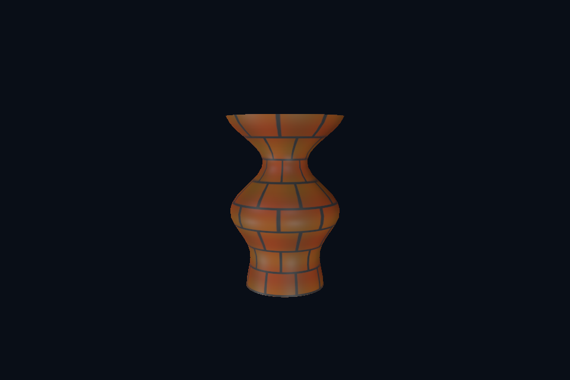

第 14 课：Assimp 与 OBJ 模型
课程首页 · 上一课 · 下一课
目标与运行
cd OpenGL
.\scripts\run.ps1 -Lesson 14_model_obj
预期画面：带有真实贴图的车削花瓶，可移动相机查看轮廓和材质。
相机：W/A/S/D 移动，Q/E 升降，按住右键转向，Esc 退出。
代码阅读顺序
14_model_obj/main.cpp → common/model.hpp → assets/models/vase.obj、vase.mtl → shaders/model.vert、pbr.frag
从本课 main.cpp 进入；公共工具在 common，GLSL 在 shaders。先画出每一遍读什么、写什么，再逐个展开辅助类。
原理与实现
硬编码立方体只是几何的起点。OBJ 文件存位置 v、纹理坐标 vt、法线 vn 和面 f，MTL 文件存材质及纹理路径。位置、UV、法线可以有不同索引，不能把 OBJ 的位置索引直接当成完整 GPU 顶点索引。Assimp 将这些差异整理为统一的 aiMesh。
Model 使用 Assimp::Importer::ReadFile，开启三角化、平滑法线生成、切线计算、合并相同完整顶点与数据校验。车削花瓶是实际读取的 OBJ 文件，不是运行时偷偷用另一份程序几何替代。构造后控制台打印网格、材质、动画数，加载失败则显示 Assimp 错误并退出。
aiScene 的数据归 Importer 所有，所以 Importer 必须活到复制完数据或使用场景结束。这里把 Importer 存在 Model 里；GPU 网格以 unique_ptr 管理，避免复制句柄造成二次释放。递归遍历 aiNode，收集它引用的 mesh，并保留节点层级变换。不要使用 PreTransformVertices 把之后需要动画的层级烘焙掉。
材质图片路径相对模型目录解析，而非当前终端目录。缓存键包含路径与色彩用途，避免同一图片既作颜色又作数据时错误共享 sRGB 格式。缺贴图使用 1×1 默认纹理，有明确路径但文件丢失则报错。白色基础贴图保留材质颜色，不应使用黑色默认图。
教程编译启用 OBJ 和 GLTF 导入器，其他格式没有编进来。可修改根 CMakeLists.txt 中的 ASSIMP_BUILD_*_IMPORTER 开关后重配；源代码已包含全部导入器，但不代表当前程序能直接打开 FBX。参见 Assimp 官方用法。
修改练习
把 vase.mtl 的颜色改为银灰；把花瓶复制成两个节点/对象，观察 mesh 和材质日志。
修改后重新执行 cmake --build build --config Debug --target 14_model_obj --parallel。GLSL、模型、图片会复制到程序旁的 shaders/assets 目录。源文件应修改教程根目录下的版本，运行目录的副本会被下一次构建覆盖。
自测与参考答案
把 OBJ 位置数直接当 GPU 顶点数可靠吗？
不可靠。UV 接缝和法线硬边会让相同位置对应多个完整顶点。
检查与排错
运行 14_model_obj.exe --smoke 可执行确定时间的四帧渲染检查。重要技术开关还可用 --smoke --variant --capture 与默认抓图对比。共享工具会检查 GL 错误、非背景像素和图像动态范围，但这不能代替人工核对技术含义。参见 进阶排错。
参考截图
以下为课程自带素材、固定时间 1 秒时的实际渲染；你的相机与操作改变后画面会不同。
